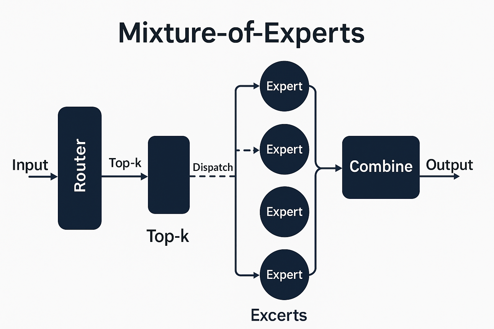

Mixture-of-Experts LLMs: A Practical Guide

Table of Contents
Why MoE?
Goal: Scale parameters without scaling per-token FLOPs.
MoE replaces dense MLPs with a bank of experts but activates only top-k experts per token.
- Compute: stays ~close to dense (k experts active).
- Capacity: total parameters ↑ massively (many experts).
- Quality: often better perplexity/accuracy at same compute.
Canonical MoE Block
MoE typically swaps in for the FFN/MLP inside a transformer layer. Attention stays dense.
Shapes (batch-first): input X ∈ ℝ[B, T, D].
- Router (gate):
g = softmax( X W_g + ε ) → ℝ[B, T, E]
- Top-k selection: pick k experts per token; compute combine weights.
- Capacity: each expert has a max token capacity
C = ⌈ α · (B·T·k)/E ⌉(α = capacity factor).
- Dispatch: all-to-all route token slices to experts.
- Experts (MLPs): each expert
f_i: ℝ[D]→ℝ[D](often larger/wider than dense FFN).
- Combine: weighted sum of expert outputs per token + residual.
Only the MLP is sparse; attention remains dense (use FlashAttention there).
Routing & Balancing
Gating:
- logits = X W_g (optionally add Gaussian noise for exploration).
- probs = softmax(logits / τ) (temperature τ).
- Choose top-k experts; gather their probs as combine weights.
Balancing (avoid expert collapse): - Aux loss encourages uniform importance and load across experts.
- Practical forms: minimize variance of tokens-per-expert, or KL divergence to uniform, or use a product-based loss (importance × load).
- Jitter/noise on router logits during warmup helps exploration.
- Capacity factor α≈1.0–1.25; overflow tokens can be: - Dropped (Switch-style) with train-time penalty, or
- Buffered/second-choice (top-2 with spillover).
Stability tricks: - Z-loss / logit clipping on router to keep probs well-behaved. - Router LR often lower than main LR (or separate schedule). - Entropy bonus early to keep routing high-entropy.
Training From Scratch
Warmup (first 1–5% steps): - Start with higher α (more capacity), higher τ (softer routing), router noise on. - Optional: temporarily top-1 before enabling top-2.
Core recipe: - Optimizer: AdamW (bf16/FP16); weight decay on experts/MLPs; no decay on norms/biases. - Dropout: light on expert MLPs if needed; avoid over-regularizing router. - Aux balance loss (λ≈0.01–0.1) — tune so no expert hogs >3–5× mean load. - Activation checkpointing for expert MLPs; bf16 activations. - All-to-all token dispatch (expert parallel) with overlapping compute/comm.
Decays & schedules: - Cosine or linear warmup/decay; consider a lower LR for router. - Grad clipping on router weights (e.g., 0.5–1.0 norm).
Convert Dense → MoE / Continued Pretraining
When you have a good dense checkpoint:
- Replace FFN with MoE bank.
- Clone dense FFN into each expert + small noise; or
- Partition the dense FFN across experts (structured init).
- Freeze router (or very low LR) for N steps; train experts to match dense behavior.
- Enable routing, then gradually sharpen τ, lower capacity α to target.
- Turn on aux loss; monitor load balance, overflow, and loss stability.
- Resume regular schedule; optional SFT/RLHF after MoE converges.
Parallelism & Systems
- Data parallel (DP): across batches.
- Tensor/model parallel (TP): shard big matrices along D.
- Pipeline parallel (PP): split layers.
- Expert parallel (EP): each expert lives on a rank; tokens routed via all-to-all.
- Combine as needed: e.g., DP × TP × EP (+ optional PP).
Systems tips: - Group experts by layer per node to keep traffic on NVLink/PCIe.
- Token packing (pack non-contiguous token slices into contiguous blocks per expert).
- Overlap: start expert compute as soon as a chunk arrives.
- Pinned memory for host/device staging; use NCCL all-to-all.
- Mixed precision for router and experts; keep softmax stable.
Inference & Serving
- Deterministic routing (no noise; fixed τ).
- Capacity α≈1.0 (no drops ideally).
- Batching: route tokens from many users together to keep experts busy.
- Placement: co-locate most-used experts with the KV-heavy attention ranks to reduce hops.
- Quantization: INT8/FP8 experts; keep router in bf16/fp16.
- Speculative decoding works (MoE mainly impacts MLP, not KV cache).
- Caching experts: pin hot experts per instance; lazy-load cold ones if model zoo is large.
FlashAttention & Friends
MoE does not change attention — keep attention dense and fast: - FlashAttention or FA-2 kernels for [B, T, D]. - Fused norms, fused QKV projections, RoPE applied before split to heads. - The sparse part is only the FFN/MLP, swapped for experts.
Best-Practice Defaults
- Where to MoE: start with every other FFN layer; scale up if stable.
- Experts per layer (E): 8–64 (common); large models go 64–256.
- Top-k: top-2 for quality; top-1 for max throughput.
- Capacity factor α: 1.0–1.25 (train higher, infer near 1.0).
- Router temp τ: warmup high (e.g., 1.5–2.0), decay to ~1.0 or <1.0.
- Aux balance loss λ: 0.01–0.1; tune to keep expert loads within ~±50%.
- Router LR: 0.5–1.0× base LR, sometimes lower early.
- Expert width: can match dense FFN or be wider (quality ↑, memory ↑).
Pitfalls & Debugging
- Expert collapse: few experts take most tokens.
- ↑ λ (balance), ↑ τ (softer), add router noise, raise α temporarily.
- Overflow/drops too high:
- Raise α, or move to top-2 with spillover. Check batching (ragged batches skew load).
- Router instability / NaNs:
- Clip router grads; add z-loss/logit clamp; lower router LR; bf16 everywhere.
- Comm bottleneck:
- Co-locate experts; overlap all-to-all with compute; bigger token-pack blocks.
- Under-utilized experts:
- Entropy bonus early; freeze “greedy” experts briefly; curriculum on data.
What to Log (KPIs)
- Per-expert tokens / step (mean, std, max; coefficient of variation).
- Overflow / drop rate per layer.
- Routing entropy and router logit norms.
- Time breakdown: all-to-all %, expert compute %, attention %.
- Throughput (tokens/s) vs dense baseline at same FLOPs.
- Eval loss vs dense at same compute.
- Memory (activations, params) per rank; OOM events.
Minimal Pseudocode
```python # X: [B, T, D] logits = X @ W_g # [B, T, E] if train: logits += normal(0, sigma) # exploration noise probs = softmax(logits / tau, dim=-1) # [B, T, E]
topk_vals, topk_idx = probs.topk(k, dim=-1) # [B, T, k]
capacity per expert
C = ceil(alpha * (BTk) / E)
build per-expert token lists (pack for all-to-all)
buckets = pack_tokens(X, topk_idx, topk_vals, capacity=C)
dispatch (all-to-all) and run experts
Y_parts = [] for e in range(E): Xe, we = buckets[e] # [Ne, D], [Ne] Ye = expert_MLPe # [Ne, D] Y_parts.append((e, Ye, we))
combine back to [B, T, D]
Y = combine_and_scatter(Y_parts, topk_idx, topk_vals, B, T, D)
add aux balancing loss
L += lambda_bal * balance_loss(probs, assignments=buckets)

Mixture-of-Experts Transformer Block (Simplified Flow)
Input Handling
Input Handling Tokenizer → converts text into tokens. Embedding Layer → maps tokens to continuous vectors. Positional Encoding → injects order information.
Core Transformer Stack (repeated across many layers) Per Layer Flow (for MoE variant): LayerNorm (LN) → stabilize inputs. Router (MoE Gate) → selects top-k experts (usually 1 or 2). Expert MLPs → each expert processes its assigned tokens. Combine Outputs → weighted sum of expert outputs. Residual Connection → add back input.
Then: LayerNorm (LN) Multi-Head Attention (MHA / FlashAttention) Residual Connection
🔁 Repeat LN → Router → Experts → Residual → LN → MHA → Residual for each block.
Training Phases
Training Phases
Pretraining (Base Model) Large corpus, self-supervised (next token prediction). MoE routing learns to specialize experts. FlashAttention or equivalent is standard for scalability.
Fine-Tuning (Instruction / RLHF) Experts adapt further with alignment objectives. Often fewer experts are “hot” depending on task domain.
So yes: LN → Router → MLP-Experts → Residual → LN → MHA → Residual is the repeating MoE transformer pattern.
FlashAttention Explained
🔹 In plain English:
A tile is just a small rectangular chunk of data — a subset of the full Q, K, V matrices — that fits in fast GPU on-chip memory (SRAM) instead of the big slow global memory (HBM).
Why Tiling Exists
🔹 Why tiles exist
When you do attention normally, you have:
Q: [Batch, Heads, SeqLen, Dim] K: [Batch, Heads, SeqLen, Dim] Computing QK^T means comparing every token with every other token → a massive NxN matrix.
That doesn’t fit in fast memory. So GPUs have to keep reading from slow memory repeatedly — and that’s the bottleneck.
FlashAttention fixes this by saying:
“Instead of computing the entire QKᵀ at once, let’s compute it piece by piece in small tiles that fit in SRAM.”
Conceptual Diagram of Tiling
🔹 How it looks conceptually
Imagine your full attention matrix as a giant grid:
[ QKᵀ full matrix ]
┌────────────────────────────┐
│ ■■■■■■■■■■■■■■■■■■■■■■■■ │
│ ■■■■■■■■■■■■■■■■■■■■■■■■ │
│ ■■■■■■■■■■■■■■■■■■■■■■■■ │
└────────────────────────────┘
Instead of handling the whole thing, FlashAttention takes it in small squares (tiles):
┌────────────────────────────┐
│ ▣▣▣ ▣▣▣ ▣▣▣ ▣▣▣ │
│ ▣▣▣ ▣▣▣ ▣▣▣ ▣▣▣ │
│ ▣▣▣ ▣▣▣ ▣▣▣ ▣▣▣ │
└────────────────────────────┘
Each tile (say 128×128 or 64×64) is:
Loaded into fast memory, Processed (softmax(QKᵀ tile) × V tile), Then written back and discarded before the next tile is loaded.
So you never have to hold the full NxN matrix in memory — only one tile at a time.
🔹 Why this matters
GPUs have a hierarchy of memory speeds: Registers (fastest) Shared memory / SRAM (very fast) Global memory (slow)
Tiles make sure all heavy math happens in fast memory, which drastically cuts read/write overhead.
✅ TL;DR:
A tile = a small sub-block of QKᵀ that fits in GPU’s fast memory.
FlashAttention streams through these tiles so it never stores the full attention map — same math, far faster.
Key Takeaways
🔹 The real purpose of GQA & FlashAttention
They don’t directly make the model more intelligent — they make it more efficiently intelligent.
They’re scaling enablers, not capability breakthroughs in themselves.
They allow intelligence to manifest at larger scales because they:
• Preserve compute (so you can train bigger models or longer contexts).
• Preserve memory bandwidth (so the model fits on available hardware).
• Maintain identical representational power (the math is the same — they just perform it smarter).
⸻
🔹 Think of them as “enablers of scale,” like MoE
Technique Core function Efficiency gain Conceptual analogy
FlashAttention Computes attention in on-chip tiles Reduces O(N²) memory overhead Efficient GPU kernel for attention math
GQA Shares K/V heads across queries Shrinks KV cache (2–8×) Memory-sharing optimization
MoE Activates only a subset of experts Cuts dense FFN compute Sparse compute routing
All three let you scale up without linearly scaling cost.
Without them, models like GPT-4, Claude 3, and Gemini 1.5 would be physically untrainable even on thousands of GPUs.
⸻
🔹 Where “intelligence” comes from
• It’s still the same Transformer architecture doing self-attention and feed-forward transformation.
• The “intelligence” improves because we can now afford more parameters, longer training runs, and longer contexts thanks to these efficiency breakthroughs.
So:
FlashAttention, GQA, and MoE don’t invent new cognition — they remove the computational bottlenecks that unlock higher-order cognition at scale.
⸻
⸻
⸻
⸻
⸻
Glossary {#glossary}
Expert (E): one MLP block; MoE layer has many experts. Top-k routing: activate k experts per token. Capacity factor (α): max tokens/expert relative to uniform share. Overflow/drop: tokens exceeding capacity (Switch drops). Aux balance loss: regularizer to equalize expert usage. Expert parallel: distribute experts across ranks; route tokens all-to-all. A tile: is just a small rectangular chunk of data — a subset of the full Q, K, V matrices — that fits in fast GPU on-chip memory (SRAM) instead of the big slow global memory (HBM). 1. Context Window (Input + Output)
This is the working memory for a single generation.
It’s purely stateless — meaning once the generation ends, that context is gone.
For example:
If GPT-5 has a 400K-token context, that means at any one time it can process 400K tokens combined from what you give it (input) + what it writes back (output). When that output finishes, the model forgets unless the conversation text is resent in the next input.
So, the context window = active short-term reasoning space.
🧩
- Conversation Recall (or “memory”)
This is external, not inside the model’s weights or context window.
Platforms like ChatGPT simulate continuity by re-feeding prior messages each turn, or (if enabled) by storing key facts separately as structured “memory.”
That’s how I remember long-term facts about you, for instance.
But it’s not part of the model’s native transformer context.